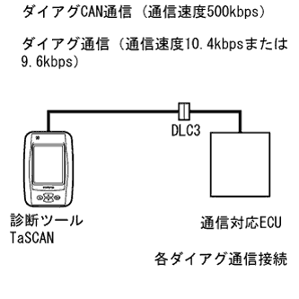
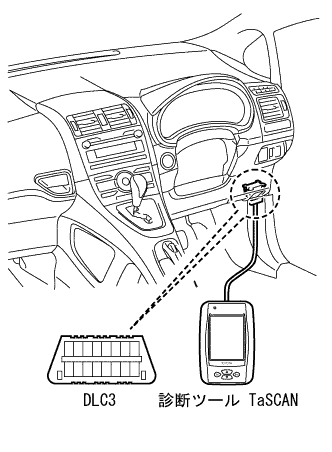
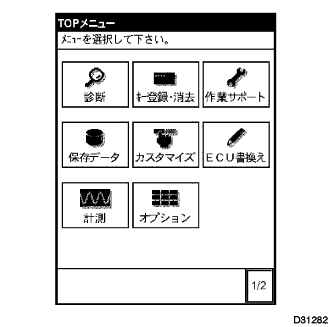
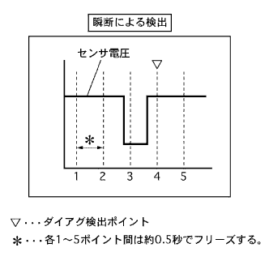
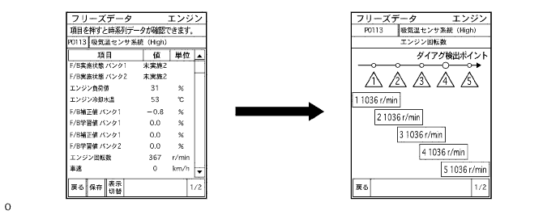
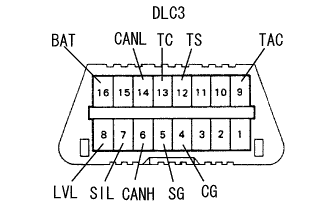
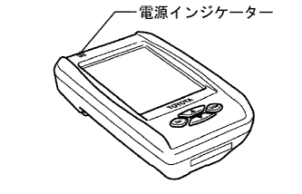
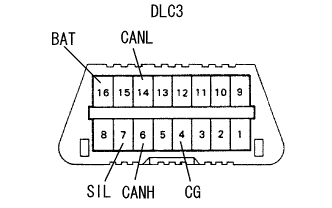
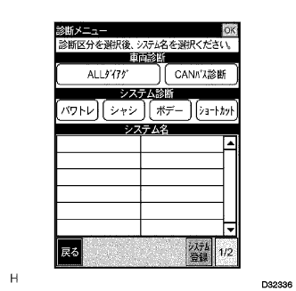

How to Troubleshoot ECU Controlled Systems New Diagnosis System |
 |
The new diagnosis system is a new diagnostic system designed for increasingly advanced and complex on-board electronic systems. The functions of this diagnostic system can be used with the TaSCAN diagnostic tool.
The TaSCAN diagnostic tool, which supports this new diagnosis system, has the functions shown in the table below.
| Function | Outline | |
|---|---|---|
| Diagnosis | Vehicle Diagnosis | ALL Diagnosis |
| CAN Bus Diagnosis | ||
| System Diagnosis | DTC Freeze Data | |
| ECU Data Monitor | ||
| Active Test | ||
| Mode Change | ||
| Check diagnosis judgment results | ||
| Freeze data during operation | ||
| Test Mode Inspection | ||
| Basic Inspection | ||
| Special operation/control history | ||
| Multi Data Monitor | ||
| Electronic key or wireless diagnosis mode | ||
| Key Registration/Deletion | Registration/deletion of wireless keys, etc. | |
| Work Support | Work support functions required when replacing ECUs or actuators | |
| Saved Data | Playback/deletion of saved data | |
| Customize | Function for checking and changing the settings of customize items according to user requests | |
| Measurement | Equipped with voltage measurement and oscilloscope functions | |
| Computer/Sensor Name | DTC reading (normal mode) | DTC reading (check mode, test mode) | Freeze frame data reading (computer data at time of malfunction) | Data monitor reading and saving/display | Active Test | Communication Line with TaSCAN |
|---|---|---|---|---|---|---|
| Engine ECU | ○ | ○ | ○ (*) | ○ | ○ | CAN |
| Main Body ECU | ○ | - | - | ○ | ○ | CAN |
| Skid Control ECU | ○ | ○ | ○ (Note) | ○ | ○ | CAN |
| 4WD ECU | ○ | ○ | - | ○ | ○ | CAN |
| Power steering ECU | ○ | - | ○ | ○ | - | CAN |
| Steering Lock ECU | ○ | - | - | ○ | - | CAN (via LIN) |
| Air Conditioning ECU | ○ | - | - | ○ | ○ | CAN |
| Airbag ECU | ○ | ○ | - | - | - | SIL |
| Headlight Leveling ECU | ○ | - | - | ○ | ○ | SIL |
| Certification ECU | ○ | - | - | ○ | ○ | CAN |
| ID Code Box | ○ | - | - | ○ | - | CAN (via LIN) |
| Meter ECU | - | - | - | ○ | ○ | CAN |
| D seat motor | ○ | - | - | ○ | ○ | CAN (via LIN) |
| CAN gateway ECU | ○ | - | - | - | - | CAN |
 |
Connecting to the Vehicle
Connect TaSCAN to the DLC3 (data link connector No.3) located near the driver side footwell.
 |
How to Use Diagnostic Tool TaSCAN
When the power switch of the TaSCAN diagnostic tool is turned ON, the menu screen is displayed.
Select the desired item, then proceed according to the instructions on the screen.
 |
Connect TaSCAN to the DLC3.
Turn IG ON.
Display the [Diagnosis] → [Freeze Data] screen and select the data items.
After selecting the items, check the data at each point.

 |
With the adoption of the new diagnosis system, functions have been consolidated into the DLC3 (located under the driver side instrument panel).
DLC3 Terminal Names and Functions
| Terminal Name | Function |
|---|---|
| BAT | Battery power source |
| CANL | Diagnosis CAN communication with each computer |
| TC | DTC (light) output command |
| TS | Test mode output command |
| TAC | Engine speed output |
| LVL | For headlight leveling servicing |
| SIL | Diagnosis communication with each computer |
| CANH | Diagnosis CAN communication with each computer |
| SG | Engine ground |
| CG | Body ground |
 |
 |
TaSCAN power indicator does not come on
Connect TaSCAN to another vehicle and start TaSCAN.
| Operating Condition | Malfunctioning Area | Inspection Point |
|---|---|---|
| When the TaSCAN power indicator comes on in red or green | Vehicle side |
|
| When the TaSCAN power indicator does not come on | TaSCAN main unit | - |
 |
Not all of the system names that support diagnosis communication and diagnosis CAN communication are displayed when System Diagnosis is pressed on the diagnosis menu.
Turn the IG switch and TaSCAN power switch OFF once, start TaSCAN again, press the [Back] key to display the diagnosis menu, and check the condition.
| Operating Condition | Malfunctioning Area | Inspection Point |
|---|---|---|
| No system names are displayed | TaSCAN main unit | - |
| System names that support diagnosis communication are not displayed | Vehicle side |
|
| System names that support diagnosis CAN communication are not displayed | Vehicle side | Repair the CAN communication by following the steps from step 5 [DLC3 inspection (CANH-CANL)] in How to Proceed with Troubleshooting for the control system CAN communication |
| One system name that supports diagnosis communication is not displayed | Vehicle side |
|
| One system name that supports diagnosis CAN communication is not displayed | Vehicle side | Repair the CAN communication by following the steps from step 3 [DTC check] in How to Proceed with Troubleshooting for the control system CAN communication |